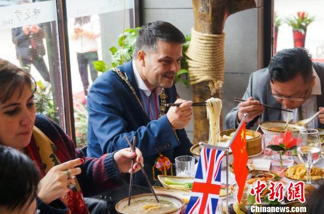

舌尖上的中国
在《舌尖上的中国》第一季第一集第12分50秒的时候，柳州人民尤其是柳州吃货们都欢腾起来了，虽然只有短短10秒的镜头，但是柳州螺蛳粉的现身还是让全城人欢呼雀跃起来！ 这是怎样的一种自豪感?走了三十多年的小众小吃路线，以为难等大雅之堂的独具柳州地域性小吃的螺蛳粉，如今也登上了中央电视台这么大的一个舞台！
查看更多在《舌尖上的中国》第一季第一集第12分50秒的时候，柳州人民尤其是柳州吃货们都欢腾起来了，虽然只有短短10秒的镜头，但是柳州螺蛳粉的现身还是让全城人欢呼雀跃起来！ 这是怎样的一种自豪感?走了三十多年的小众小吃路线，以为难等大雅之堂的独具柳州地域性小吃的螺蛳粉，如今也登上了中央电视台这么大的一个舞台！
查看更多